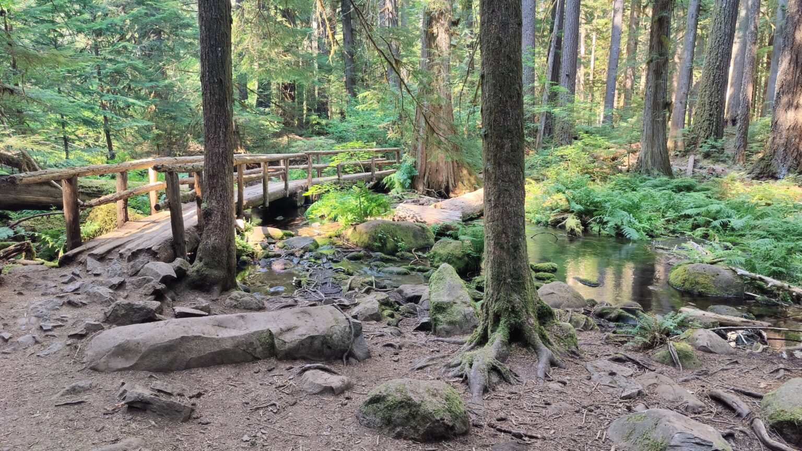

Background
A geological marvel unveiled
About 1,600 years ago, a massive lava flow from Belknap Crater swallowed a three-mile stretch of the McKenzie River between Carmen Reservoir and Tamolitch Falls. Today, the river vanishes underground, only to mysteriously resurface at the base of the dry falls through porous lava, bubbling up into the iconic Blue Pool.
This pristine turquoise gem, framed by alder-draped cliffs and evergreen sentinels, holds water averaging a bone-chilling 37°F — mesmerizing all who behold its otherworldly glow.
Our Experience
Our decision to take on this challenging hike to Blue Pool came from a simple curiosity about how such a remarkable place came to exist. During our summer road trip in 2024, we visited many destinations we found through quick online searches. When we came across Blue Pool on the McKenzie River, the allure of its vivid blue color and icy water was enough to send us to the trailhead.
When we first arrived at the parking area, we were surprised to find no open spaces near the trailhead entrance. Instead, vehicles lined the roadway in a long stream, filled with visitors heading to Blue Pool. We later learned that only a few parking spaces are available at the trailhead near the restroom, while the remaining spaces are reserved for emergency vehicles due to the high number of rescue calls this location receives each year. It is also important to note that cell service is nearly nonexistent here, so visitors should share their plans, expected return time, and safety precautions with someone before setting out.
First descent along the McKenzie River
Upon entering the forested trail, we were greeted by a cool, shaded canopy overhead and the steady flow of the McKenzie River to our right. The path was well maintained, clear, and easy to follow at the beginning. The hike begins with a moderate descent along the McKenzie River, following its path for much of the way.
Numerous side paths invite hikers to veer off to the riverbanks for photos or to cool off in the frigid water, which emerges from an underground lava tube upriver at Blue Pool itself. From Trail Bridge Reservoir, the trail spans about 2.1 miles; an alternate route from Carmen Smith Reservoir is roughly 3.3 miles. Starting at 2,200 feet elevation, it climbs to 2,450 feet, earning a moderate difficulty rating.

As the hike's difficulty increases, numerous rest spots appear along the way. This footbridge over the creek proved an inviting pause for us to rest and cool off. The magical feel of the dense forest, combined with the serene scene of the bridge arching over the flowing creek, truly sets the tone for the adventure.
Arrival at the turquoise Blue Pool
After ascending the unique volcanic ridge, we crested the trail to discover the shimmering Blue Pool appearing as if by magic from nowhere. Fed by that hidden underground journey through the lava tube, the icy water spills forth to continue the McKenzie River toward Trail Bridge Reservoir. Though the falls themselves lie dry most of the year, flowing only in wet winters, the pool's surreal beauty leaves every visitor spellbound.
Resources
- US Forest Service: Tamolitch Falls (Blue Pool) #3507
- Oregon, Essential
- OregonHikers.org
- Washington Trails Association
- Trip Advisor